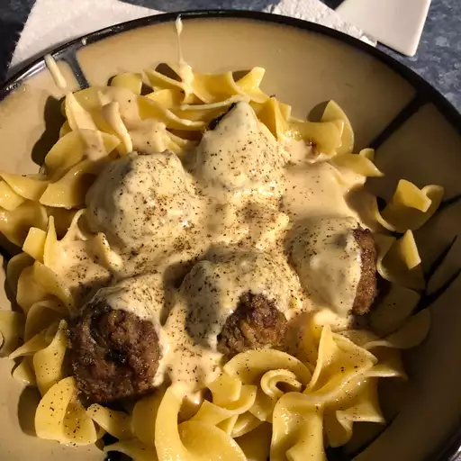

Swedish meatballs

Photo by
AmyZ
Swedish meatballs, or "köttbullar" in Swedish, are a popular dish that has
gained international recognition.
These savory meatballs are traditionally made from a mixture of ground
meat, often a combination of beef and pork, mixed with breadcrumbs, eggs,
and various seasonings. The exact recipe can vary, with some regional and
family variations.
Ingredients
- 1 pound ground meat (beef and pork mixture)
- 1 small onion, finely chopped or grated
- 1/2 cup breadcrumbs
- 1 egg
- 1/2 cup milk
- Salt and pepper to taste
-
1/4 teaspoon allspice 1/4 teaspoon nutmeg Butter or oil for frying
- 1/4 teaspoon nutmeg Butter or oil for frying
- Butter or oil for frying
Instructions
-
Prepare Ingredients: In a mixing bowl, combine the ground meat, finely
chopped onion, breadcrumbs, egg, and milk. Add salt, pepper, allspice,
and nutmeg to the mixture. Mix well until all ingredients are evenly
combined.
-
Shape Meatballs: With your hands, shape the mixture into small, round
meatballs. The size can vary based on personal preference, but they are
typically about 1 inch in diameter.
-
Cook Meatballs: Heat butter or oil in a skillet over medium heat. Place
the meatballs in the skillet, ensuring they are not too crowded, and
cook until browned on all sides. This usually takes about 8-10 minutes,
depending on the size of the meatballs.
-
Optional: Make Gravy: If desired, you can make a simple gravy. Remove
the meatballs from the skillet and set them aside. In the same skillet,
add a bit more butter or oil if needed. Stir in flour to create a roux.
Gradually whisk in beef or vegetable broth until the mixture thickens
into a gravy. Season with salt and pepper.